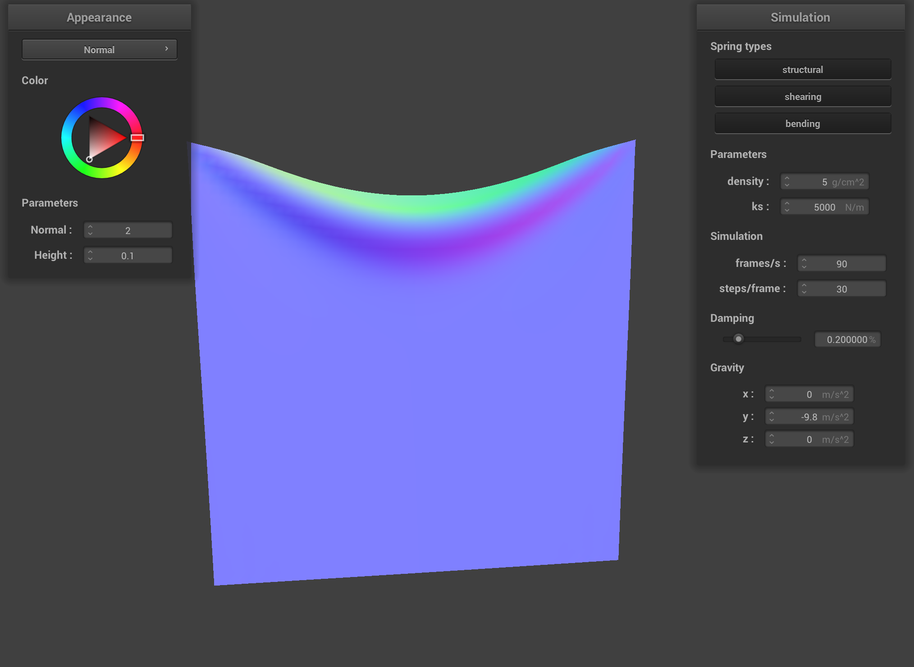
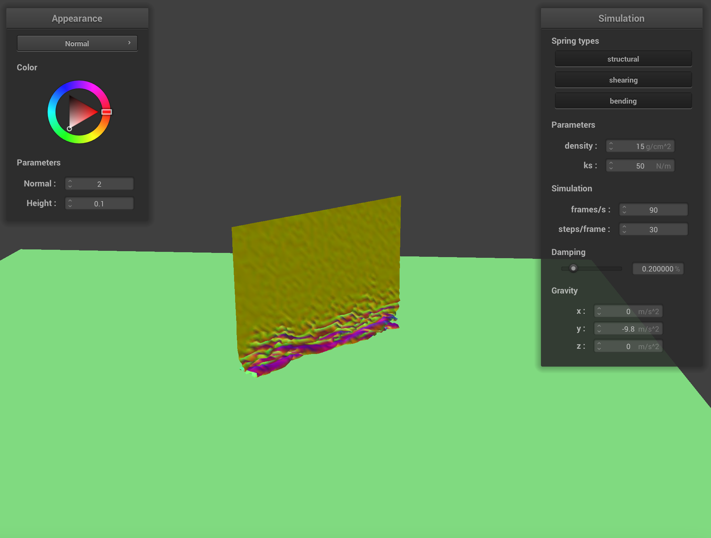

CS184/284A Spring 2025 Homework 4 Write-Up
Link to webpage: (TODO) cs184.eecs.berkeley.edu/sp25
Link to GitHub repository: (TODO) cs184.eecs.berkeley.edu/sp25

Overview
Give a high-level overview of what you implemented in this homework. Think about what you've built as a whole. Share your thoughts on what interesting things you've learned from completing the homework.Part 1: Masses and springs
In this part, we implement a grid of point masses connected by springs. This models the cloth properties well.

|
|

|
|
Part 2: Simulation via numerical integration
In this part, we implemented the simulation of the cloths movements over time based on the forces that act on the point masses.
Spring Constant (ks)
The spring constant (ks) represents the stiffness of the cloth material.
With a low ks (500 N/m), the cloth becomes a lot more reactive/bouncy and stretchy. It will change its shape alot more and bounce around when it goes from its starting position to its rest position since the material is not as stiff and is prone to change by physical forces.
With a high ks (100,000 N/m), the cloth becomes extremely stiff and resistant to stretching. It hardly deforms or moves much beyond the overall falling motion. When it settles, it behaves almost like a rigid object falling, with very little internal movement or bouncing.

ks (500 N/m): Cloth is very stretchy and hangs low. |
ks (100,000 N/m): Cloth is very stiff, almost rigid. |
Density
Density affects the mass of each point. Which means a higher density makes a heavier cloth.
With a low density (5 g/cm^2), the cloth is lighter. With a low value its less likely that your cloth will sag in on itself, since its so light.
With a high density (100 g/cm^2), the cloth is much heavier. It hangs lower and folds in on itself.
|

|

|
Damping
Damping determines how much energy is spread from the system over time.
With low damping (e.g., 0%), the cloth loses very little energy. Any motion that the cloth experiences will be amplified and have the cloth be more jiggly or jello like.
With high damping energy is dissipated very quickly. So the cloth when reacting with a force, will react less violently than the cloth with a low dampening value since the energy dissapears more quickly. EX: If you run the animation the cloth will fall/react more slowly than the lower damping value.

|

|
Pinned Cloth (scene/pinned4.json)
Below is a screenshot of the shaded cloth from scene/pinned4.json in its final resting state.

scene/pinned4.json with default parameters.Part 3: Handling collisions with other objects
This part involves implementing collision detection.
Collision Implementation Details
Collision with spheres:
The sphere collision method (Sphere::collide) takes a point mass and checks if its current position is inside the sphere. If an intersection happens, we move it back to the surface.
If it is inside the sphere, the point mass is put along the surface of the sphere. To do this we create a correction vector from the last_position of the point mass and the tangent point on the sphere's surface. Then using this vector, I scaled it by a factor of (1-f), and moved the point mass along this vector to put it in the proper place.
Collision with planes:
The plane collision method (Plane::collide) checks if a point mass has crossed the plane during the last time step. If a crossing is detected, I compute the intersection point between the mass's trajectory and the plane. Then I apply a small offset in the direction of the original side of the plane before crossing. Then I apply a correction of the last_position of the object to the adjusted tangent point which is scaled by (1-f) to get the the right side of the plane.
Sphere Collision Results (scene/sphere.json)
We simulated the cloth falling onto a sphere with different spring constants (ks).
Explanation of effects: The spring constant ks defines how reactive the cloth is. This explains why, with a low ks, the cloth was very stretchy and wrapped around the sphere almost completely. On the other hand, with a high ks, the cloth was very stiff and resisted bending. It ended up forming harder folds and maintaining more of its original shape rather than conforming to the sphere's curves.

ks = 500). Cloth is stretchy and conforms closely. |
ks = 5000). Moderate draping. |

ks = 50000). Cloth is stiff, forms sharp folds. |
Plane Collision Results
Below is a picture of a cloth on the plane.
Part 4: Handling self-collisions
To prevent the cloth from passing through itself, this part implemented a self-collision function. An approach using spatial hashing was used to avoid checking every pair of point masses.
Self-Collision Implementation Details
Our implementation relies on spatial hashing and involves three key functions:
-
hash_position: This function maps a 3D position (pos) to a unique key representing a spatial bin. First, we calculate the dimensions of the spatial bin based on the cloth's overall size and the number of bins. Then, the function determines the integer coordinates (ix, iy, iz) of the bin containing the given position. These integer coordinates are combined into a single floating-point hash key using a prime number multiplication scheme. -
build_spatial_map: This function populates a hash map (e.g.,map) that stores lists of point masses belonging to each spatial bin. It iterates through every point mass in the cloth. For each point mass, it callshash_positionto get its spatial bin key. It then inserts a pointer to that point mass into the vector associated with that key in the hash map. If the key doesn't exist yet, a new entry with a new vector is created. -
self_collide: This function performs the actual collision detection and response for a given point mass (pm) during a single time step.- It first calculates the hash key for
pm's current position usinghash_position. - It retrieves the list of potentially colliding point masses from the spatial map using this key.
- It iterates through all candidate point masses (
candidate_pm) in the retrieved list. - For each candidate that is not the same as the original point mass, it calculates the vector difference between their positions and the distance
- If the distance
distis less than the threshold, a collision is detected. - If a collision occurs, a correction vector is calculated. This vector points from the candidate point mass towards the original point mass.
- This correction vector is accumulated across all detected collisions for the current point mass
pmwithin this time step. - After checking all candidates, if any collisions were detected, the total accumulated correction vector is averaged by dividing by the number of collisions found.
- This average correction vector is then scaled down by the number of simulation steps per frame (
simulation_steps) to distribute the correction smoothly over the frame's substeps. - Finally, this scaled, averaged correction vector is added to the point mass's
position, pushing it away from the points it was colliding with.
- It first calculates the hash key for
Inside the main simulation loop, Within the loop over all point masses, we call self_collide for each point mass pm to apply the self-collision corrections.
Self-Collision Simulation Progression
The following screenshots show the cloth falling and folding onto itself over time using default parameters.

|

|

|
Parameter Effects on Self-Collision
Spring Constant (ks) Analysis:
Increasing the spring constant (ks) in the simulation results in the cloth being stiffer and more resistant to bending and stretching. As a result, it does not fold in on itself as much when dropped. This results in a cloth with fewer folds at its final resting state. With a lower ks, the cloth is much more flexible and folds in on itself more easily, leading to more wrinkles.
Low Spring Constant (ks) Example:

ks: Initial fall, flexible. |
ks: Complex folding. |

ks: Final state, many folds. |
High Spring Constant (ks) Example:

ks: Initial fall, stiff. |

ks:forms broader bends. |

ks: Final state, fewer, wider folds. |
Part 5: Shaders
This part involved implementing various shading techniques using GLSL shader programs.
Shader Programs Explained
A shader program is a piece of code that runs on the GPU and decides how objects are rendered on the screen.
- Vertex Shader: This shader runs once for each vertex of the 3D model. Its meant to transform the vertex's position from model space to screen space and to process vertex attributes like normals, colors, and texture coordinates. It then passes these attributes down the pipeline. It also writes varyings for use in the fragment shader.
- Fragment Shader: After rasterization,primitives are rasterized into fragments, this shader runs once for each fragment. Its main job is to determine the final color of the fragment.
Together you can use both the vertex shader and the fragment shader to decide how something looks. WIth the output of the vertex shader becoming the thing that feeds into the fragment shader.
Blinn-Phong Shading Model
The Blinn-Phong shading model is a model used to approximate the appearance of local light illumination on a surface. It calculates the color of a point by summing three components:
- Ambient Component: This represents indirect light that's scattered throughout the scene.
- Diffuse Component: This simulates light reflecting equally in all directions from a matte surface.
- Specular Component: This simulates shiny highlights, where light reflects more strongly in a specific direction towards the viewer.
The final color is the sum of these three components: \( L = L_{ambient} + L_{diffuse} + L_{specular} \).
Below are screenshots showing each component individually and then combined for a white sphere:

|
|

|
|
Texture Mapping
Texture mapping allows us to apply a 2D image onto the surface of a 3D model.
Here is the cloth rendered with a custom texture (`textures/texture1.png`):
Bump and Displacement Mapping Comparison
Both bump mapping and displacement mapping use a texture (often called a height map) to create the appearance of surface detail. The picnic texture for both techniques below.
- Bump Mapping: This technique simulates surface detail without actually changing the geometry.
- Displacement Mapping: This technique actually modifies the positions of the vertices based on the height map.
Effect of Mesh Resolution:
We observe the difference by rendering the sphere with low resolution (-o 16 -a 16) and high resolution (-o 128 -a 128).
Bump Mapping Results:

|

|
Displacement Mapping vs. Bump Mapping on Spheres:
| Technique | Low Resolution Sphere (-o 16 -a 16) | High Resolution Sphere (-o 128 -a 128) |
|---|---|---|
| Bump Mapping |

|
|
| Displacement Mapping |

|

|
Mirror Shader
The mirror shader simulates a perfectly reflective mirror.
|
|

|